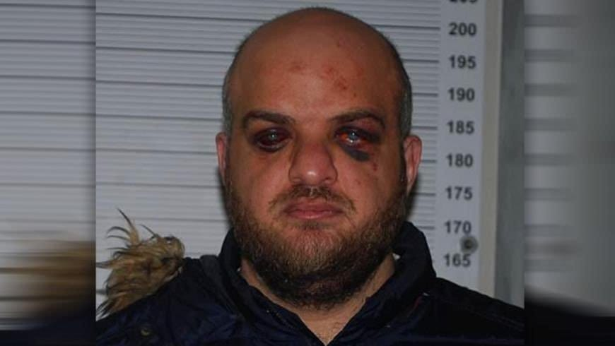

1. Brutalités policières et sévices lors de l'interpellation
Alors qu'il se rendait à son domicile à Marseille au petit matin, Majdi Nema est violemment plaqué au sol par des individus en civil sans signe distinctif immédiat. Croyant à une tentative de rapt crapuleux, il se débat avant de subir un déferlement de violence caractérisé : strangulation, coups répétés au visage et sur le corps.
Les examens médicaux ultérieurs et les photographies versées au dossier d'instruction confirment des hématomes massifs, des ecchymoses faciales et des hémorragies oculaires sévères, motivant le dépôt d'une plainte officielle pour violences volontaires commises par personnes dépositaires de l'autorité publique.

2. Saturation délibérée du dossier pour prolonger la détention provisoire
Le code de procédure pénale encadre strictement les durées maximales de détention provisoire avant renvoi. Afin de contourner ces échéances et justifier le maintien en détention d'un étranger sans antécédent sur le sol national, le magistrat instructeur et les services enquêteurs ont saturé l'instruction de milliers de pages arabophones totalement étrangères au périmètre des faits poursuivis.
3. Biais politique d'interrogatoire et anachronisme des témoins
- Questions sur la défection militaire : À plus de dix reprises, le juge d'instruction a interrogé le prévenu sur les motifs politiques l'ayant poussé à faire défection de l'armée de Bachar el-Assad en 2012, soulevant une vive protestation de son conseil face à une politisation manifeste des débats.
- Témoins à charge anachroniques : L'accusation s'est appuyée sur des déclarations affirmant l'avoir vu diriger des opérations dans la Ghouta en 2015, allégation matériellement contredite par l'ensemble des registres frontaliers et des attestations universitaires prouvant sa résidence continue à Istanbul depuis mai 2013.
- Poursuite par intention : Privée des accusations de crimes de sang et d'enlèvement anéanties par la Cour de cassation, l'instruction a déplacé l'accusation vers une « participation à une association formée en vue de préparer des crimes », criminalisant de fait une activité de porte-parole à des milliers de kilomètres de la zone de conflit.
4. Conditions de détention et privation des liens familiaux
Pendant les dix premiers mois de sa garde à vue et de sa détention, Majdi Nema a été totalement privé de contact avec sa mère, son père et ses frères et sœurs. Détenu depuis plus de cinq ans sans jamais avoir pu bénéficier d'un parloir familial en raison du refus des autorités consulaires de délivrer des visas à ses proches, il a entamé une grève de la faim en novembre 2024 pour dénoncer des fouilles à nu abusives et l'absence de suivi médical spécialisé.